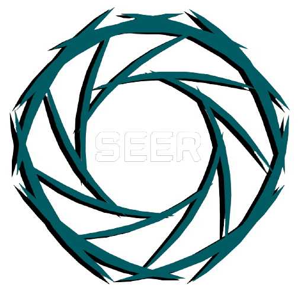

Seer
Escolher máquinas
Dashboard ao vivo
Dashboard métricas
Cadastro Máquina
Cadastro funcionário
Log-out
Frequência diária CPU
CPU:
Status Scada
Software Scada
Frequência diária RAM
RAM:
Frequência diária Disco
DISCO: